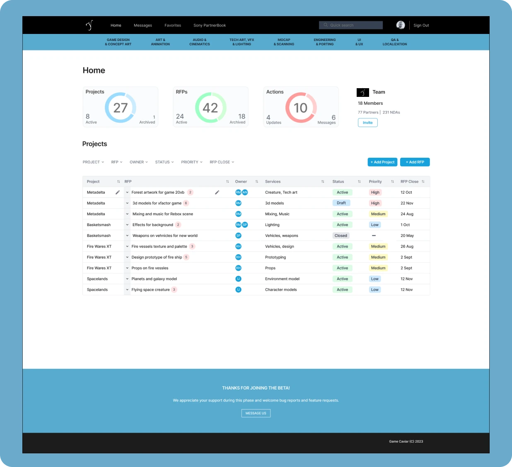
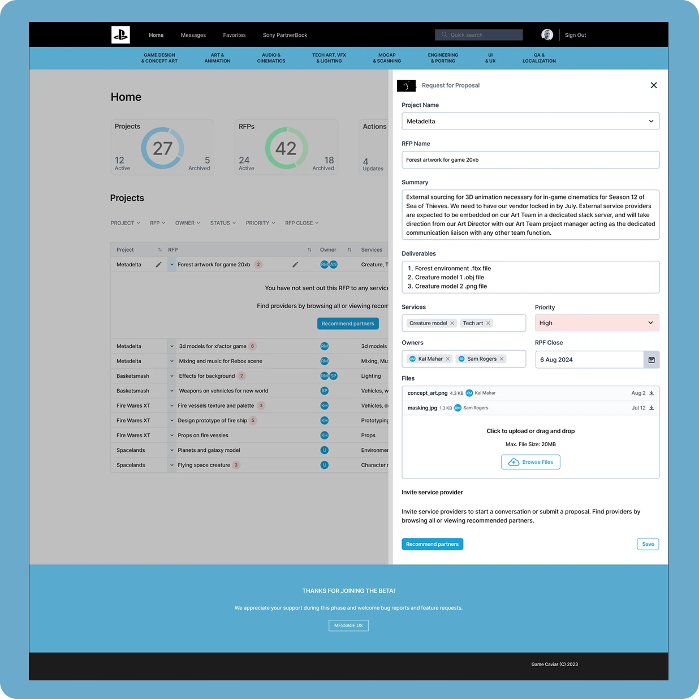

At a glance
About Game Caviar and the goal
About Game Caviar
Game Caviar is a two-sided marketspace. Game developers post what they need, and service providers respond.
The goal
Create a clean home screen, or dashboard, for game developers to view their projects, RFPs, actions and team information, with the ability to act without leaving the page.
Process
I designed five screens, shaped by feedback from partners and developers:
- Home, with a summary of projects, RFPs and actions
- Home with an open table
- A window to create an RFP
- A window to send a message
- A search results module on the Developer List page


Flows and journey
The first idea was a summary page with links out to separate screens. It grew into a richer home page with a sortable table, so developers could do more in one place.
The home screen supports four kinds of action:
- View summaries
- View and edit projects
- Create or edit RFPs
- Send or respond to messages
Challenges
One table, only the essentials
Everything a developer needs had to fit in a single table. That meant choosing what to leave out, such as removing Start Date.
A new kind of message
The new messaging needed to stay separate from the site-wide messaging system. I created a new message entity tied to the developer, the provider and the RFP.
Results
The design was used to present Game Caviar to a prominent game developer for an exclusive partnership, and it was well received.
“Erin has played a pivotal role in developing the first B2B SAAS Marketplace for the $52B Game Development industry. The website and platform were in development simultaneously, and the platform required a complex, multi-layered, multi-focused interface to support both sides of the marketplace.
Erin ramped up in a technical industry, asking thoughtful questions and presenting viable solutions very quickly. With the added complexity of feedback from multiple clients, Erin delivered UX solutions that didn’t require explanation despite solving difficult problems with a flexible and holistic approach.
We will be continuing to work with Erin-Marie as the product grows and wholeheartedly recommend her UI, UX and web expertise.”
Jason Smith, CEO, Game Caviar